Canciones destacadas
Prófugos
1985
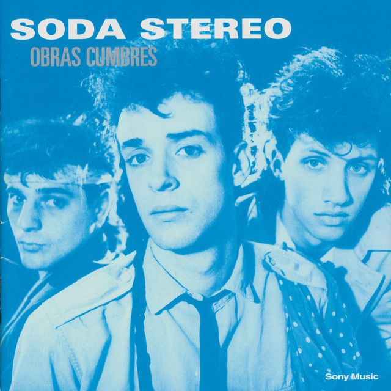
Persiana Americana
1986
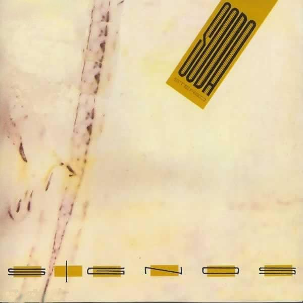
De Música Ligera
1990
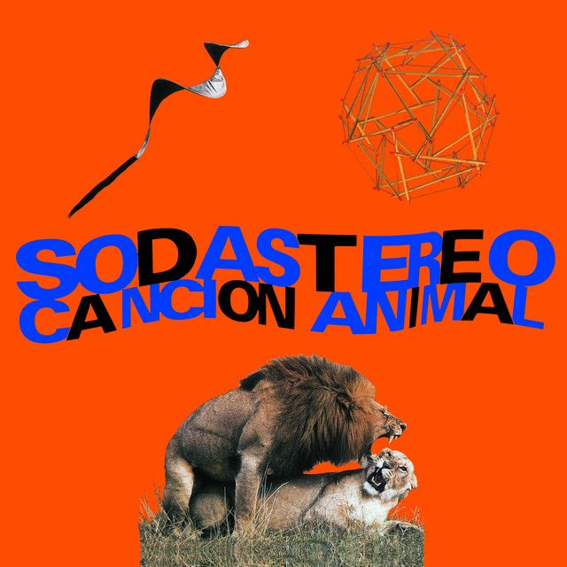
Nada Personal
1985
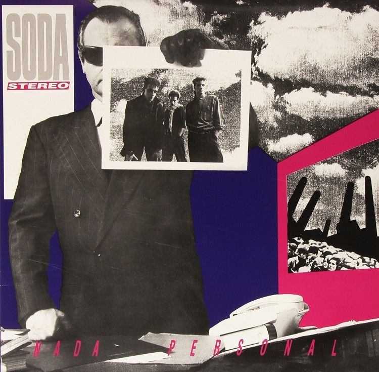
 @sodastereo
@sodastereo
Me verás volver
Soda Stereo fue una influyente banda de rock argentina formada en Buenos Aires en 1982. Integrada por Gustavo Cerati encargado de la voz y la guitarra, Zeta Bosio en el bajo y Charly Alberti en la batería, la banda es considerada pionera del rock en español y una de las más importantes de América Latina. Su estilo musical fusionaba rock, pop y new wave, caracterizado por letras introspectivas y melodías pegajosas. A lo largo de su carrera, Soda Stereo lanzó varios álbumes exitosos, incluyendo "Signos" (1986), "Doble Vida" (1988) y "Canción Animal" (1990), que consolidaron su estatus como íconos del rock en español. La banda se disolvió en 1997, pero su legado perdura, influyendo en numerosas generaciones de músicos y fanáticos del rock latinoamericano.
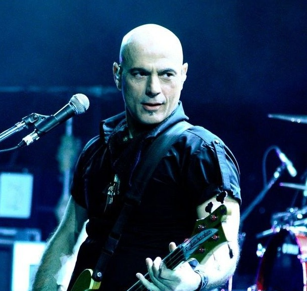
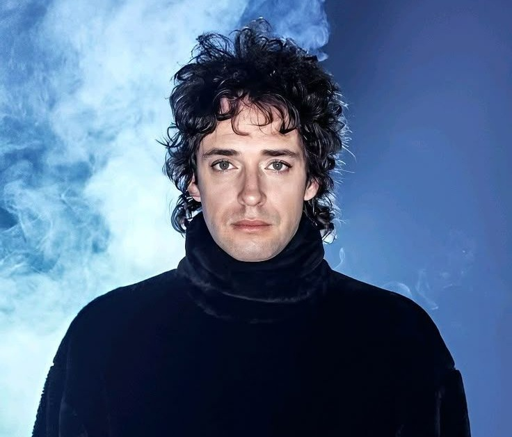
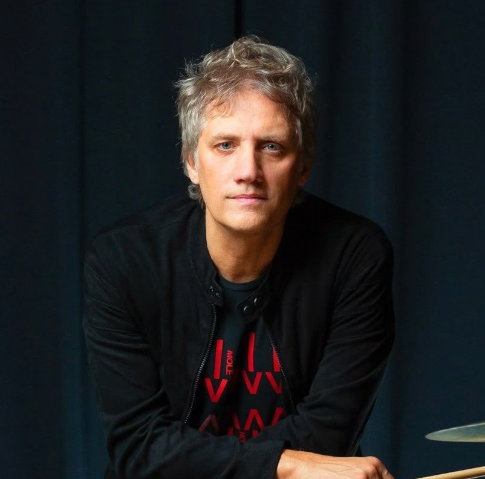
Argentina
En una Buenos Aires que despertaba de su letargo, tres jóvenes cruzaron sus destinos. La ciudad recuperaba su pulso creativo, impulsando el inicio de una identidad única. La inquietud artística funcionó como el motor vital de esta historia en construcción.
Sus primeros ensayos exploraron la energía y la frescura rítmica del new wave. La banda buscaba distanciarse radicalmente de la solemnidad del rock tradicional argentino. Aunque la fórmula maduraba, la intención estética moderna ya era totalmente innegociable.
El circuito underground porteño sirvió como laboratorio ideal para afinar su estilo. Los pequeños escenarios permitieron pulir una actitud escénica cargada de magnetismo. Cada presentación en vivo sumaba confianza, visibilidad y nuevos seguidores al proyecto.
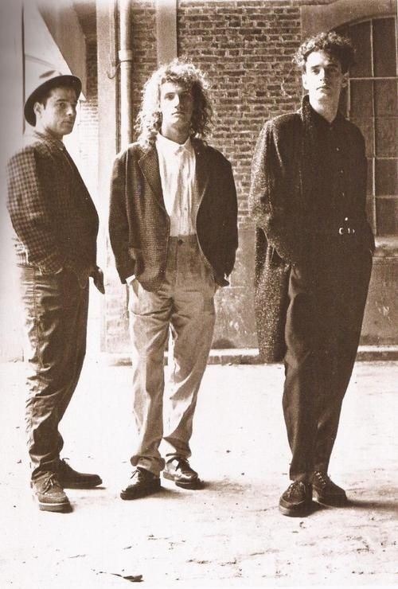
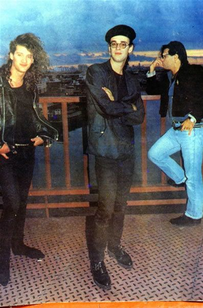
Uruguay
La imagen jugó un rol protagonista, integrando vestuario y peinados a la música. Entendieron rápidamente que el impacto visual potenciaba la fuerza de su mensaje. El grupo se consolidó como un concepto integral donde la estética definía el rumbo.
Punta del Este representó el primer desafío real ante una audiencia internacional. Ese desplazamiento geográfico validó sus ambiciones y amplió los horizontes del trío. Allí se confirmó que el proyecto poseía una proyección regional contundente.
El ciclo inicial cerró con la consolidación de la formación definitiva y su nombre. Con una identidad clara y un norte fijo, el punto de partida estaba marcado. La leyenda comenzaba a escribirse sobre cimientos sólidos y vanguardistas.
Argentina
El ascenso fue vertiginoso, dominando las radios y conquistando grandes escenarios. Su popularidad desbordó los límites locales para convertirse en una fiebre nacional. Las canciones circulaban con una fuerza imparable por todo el territorio argentino.
Rosario se transformó en la plaza fundamental para detonar su despegue masivo. La respuesta del público fue un estallido de entusiasmo inmediato y visceral. Una conexión eléctrica y contundente unió definitivamente a la banda con la gente.
El sonido adquirió una solidez madura y un carácter distintivo inconfundible. Las líricas evolucionaron hacia una mayor profundidad simbólica y sofisticada. El grupo dejó atrás las influencias para imponer una propuesta artística propia.
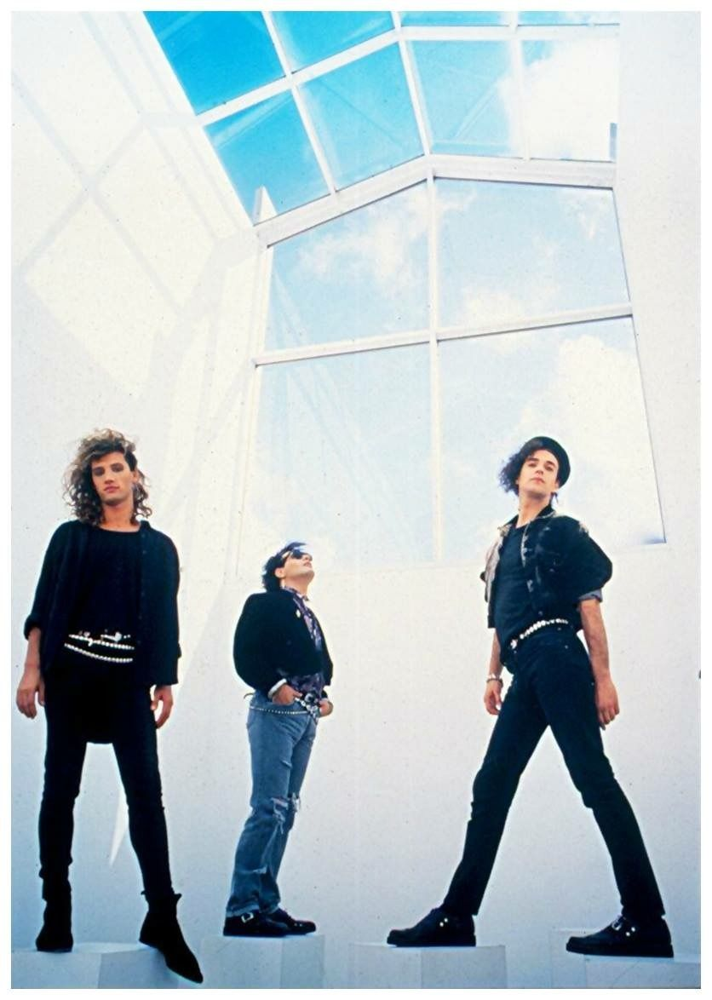
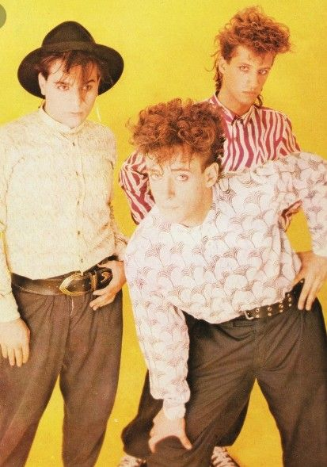
Chile
Santiago de Chile marcó el verdadero inicio de su expansión internacional. El impacto transandino fue instantáneo, masivo y absolutamente revolucionario. Se inauguró así la era dorada del rock latinoamericano moderno sin fronteras.
Asumieron la vanguardia de una escena regional naciente y vibrante. Su fenómeno obligó a otros artistas a tomar nota del nuevo paradigma musical. El liderazgo cultural de Soda se volvió una realidad evidente e indiscutible.
Esta etapa selló la metamorfosis definitiva de promesa emergente a fenómeno. Soda Stereo abandonó el anonimato para consagrarse como referencia absoluta. Ya no eran una apuesta, sino los gigantes de una generación entera.
México
La madurez artística definió el pulso de este período trascendental y creativo. Las composiciones escalaron hacia un nivel de complejidad y ambición superior. El sonido evolucionó, volviéndose notablemente más atmosférico y sofisticado.
Ciudad de México se erigió como el epicentro de su voraz expansión continental. La recepción del público fue masiva, ferviente y sostenida en el tiempo. Soda Stereo dejó los recintos medios para transformarse en una banda de estadios.
La relación forjada con la audiencia mexicana resultó intensa e inquebrantable. Cada concierto reforzaba un vínculo emocional profundo entre artistas y seguidores. Allí la banda terminó de comprender la magnitud de su dimensión continental.
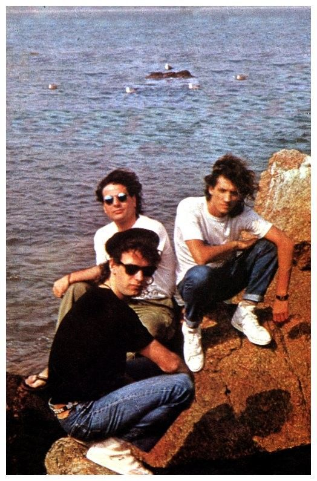
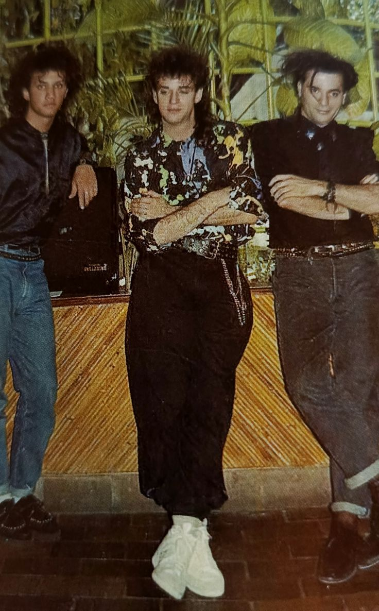
Venezuela
Caracas representó la consolidación definitiva en el norte de Sudamérica. El impacto cultural generado fue profundo, transversal y sin precedentes. Su música logró trascender barreras sociales y unir a distintas generaciones.
En el plano creativo, se aventuraron a explorar nuevos lenguajes sonoros. La experimentación se convirtió en el eje central de su proceso compositivo. Aquel riesgo artístico arrojó como resultado obras maestras memorables.
Esta etapa posicionó al grupo en la cima absoluta del rock en español. Su liderazgo en la industria se volvió una verdad indiscutible y rotunda. Soda Stereo dominaba la escena con una autoridad artística total.
Colombia
El desgaste interno comenzó a manifestarse tras años de vertiginosa convivencia. Las tensiones creativas surgieron como consecuencia inevitable de un éxito prolongado. El grupo se sumergió en una fase notablemente más introspectiva y personal.
Bogotá fue testigo privilegiado de una intensidad escénica distinta y madura. Las presentaciones adoptaron un tono más contenido, reflexivo y emocional. Aunque la atmósfera cambió, la conexión con el público permaneció inalterable.
Musicalmente, la propuesta viró hacia texturas más oscuras y experimentales. Las letras adquirieron un carácter confesional, cargado de profundidad lírica. La metamorfosis artística resultaba evidente en cada nueva composición sonora.
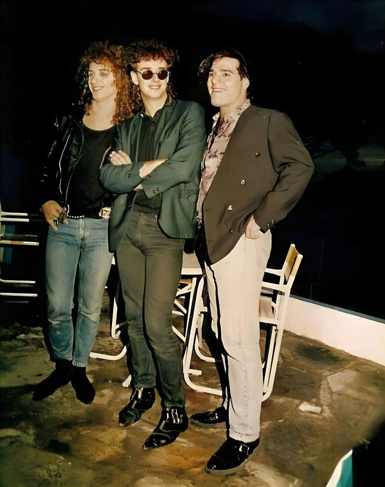
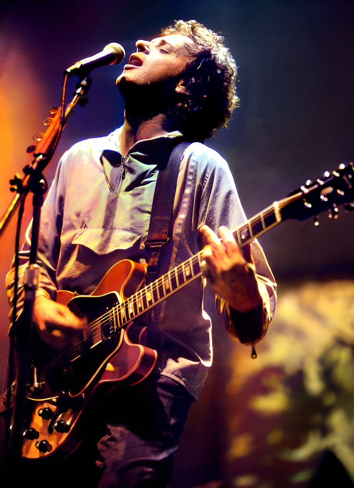
Perú
Lima simbolizó el escenario ideal para una despedida gradual y emotiva. La audiencia respondió con una devoción absoluta ante sus ídolos. Cada concierto se vivía como una solemne ceremonia de cierre anticipado.
En 1997, la separación del trío se comunicó de manera oficial y definitiva. Sin escándalos mediáticos, prevaleció una insalvable distancia creativa entre ellos. El silencio pausado reemplazó finalmente a la euforia de los estadios.
Esta etapa decretó el final de una era dorada e irrepetible. Soda Stereo decidió retirarse manteniendo su estatus en la cima absoluta. El impacto de su partida resonó con fuerza a nivel continental.
Argentina
El regreso se materializó de forma monumental e inesperada tras una década. La noticia sacudió los cimientos musicales de toda Latinoamérica. La expectativa popular alcanzó niveles históricos y absolutamente febriles.
Córdoba inauguró una gira cargada de profundo simbolismo y memoria. El reencuentro con el público resultó emotivo, vibrante y contundente. Sobre el escenario, la química del trío permanecía milagrosamente intacta.
El tour se transformó rápidamente en un fenómeno cultural sin precedentes. Los clásicos recuperaron una vigencia inmediata, poderosa y actual. Nuevas generaciones se unieron al fervor de aquel ritual colectivo.
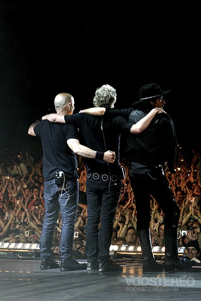
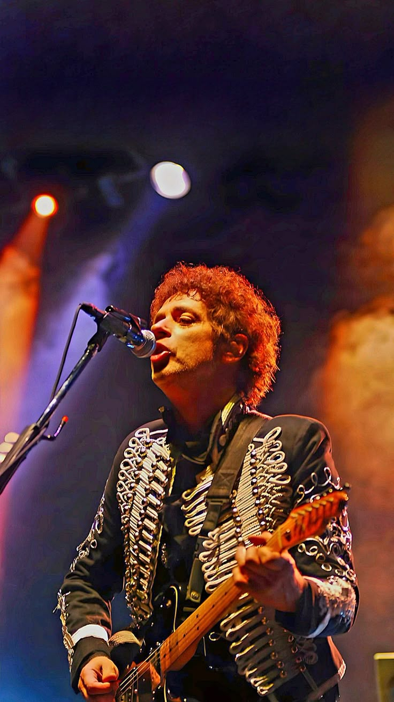
Uruguay
Montevideo representó uno de los hitos más emotivos del recorrido. La cercanía con Argentina potenció la carga simbólica del espectáculo. Cada acorde resonó en la multitud como un instante único e irrepetible.
El desenlace del tour confirmó la magnitud colosal del retorno. Más allá de la nostalgia, fue una reafirmación artística total. Soda Stereo demostró que su vigencia y legado eran inmortales.
Esta etapa selló una despedida definitiva, digna y eterna. El mensaje final fue entregado con absoluta claridad y elegancia. El círculo de su historia se cerró con la máxima grandeza posible.
Argentina
El último capítulo de la historia quedó marcado por un silencio abrupto y doloroso. La actividad musical se detuvo inesperadamente para dar paso a la incertidumbre. La atención abandonó los escenarios para centrarse en la fragilidad humana.
Buenos Aires se transformó en el epicentro emocional de esta larga vigilia. La ciudad acompañó el proceso con un respeto absoluto y una espera silenciosa. El vínculo entre el artista y su público se volvió profundamente íntimo y espiritual.
Durante años, la ausencia obligó a una relectura completa de su inmenso legado. Las canciones comenzaron a escucharse desde una perspectiva nueva y emotiva. La obra adquirió una dimensión casi mística que trascendía lo meramente sonoro.
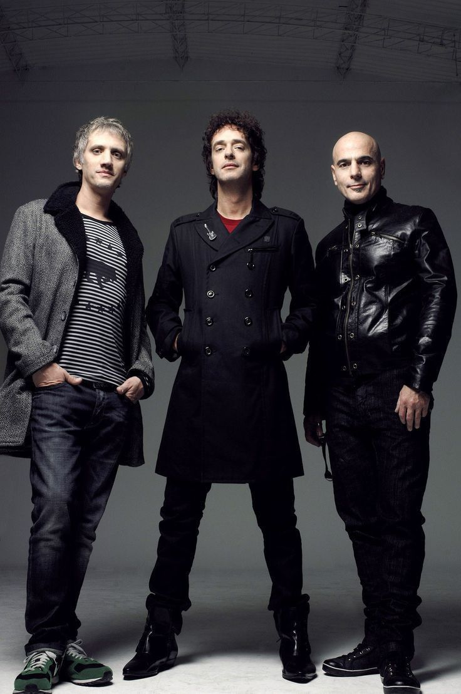
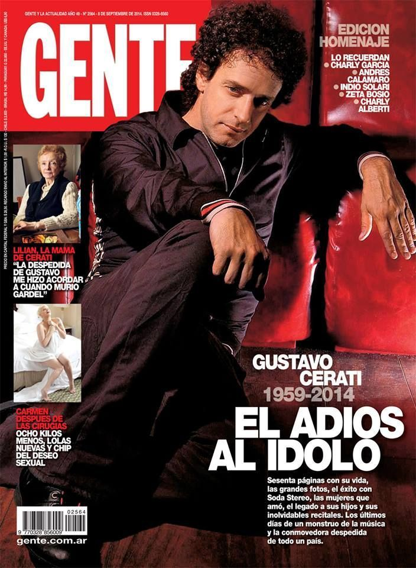
Argentina
Esta ciudad representó el escenario más reservado y personal de este cierre. Allí, la vida cotidiana se entrelazó con la memoria colectiva de todo un país. El estruendo del rock mutó en un espacio de silencio, introspección y memoria.
La confirmación del fallecimiento en 2014 provocó una conmoción continental. No fue solo la pérdida de un músico, sino el adiós a un ícono generacional. Aquel suceso marcó el cierre definitivo e irrevocable de una era cultural dorada.
Esta etapa final consagró a Soda Stereo como patrimonio eterno del rock en español. La historia quedó completa, sin fisuras, grabada en el alma de Latinoamérica. El legado logró trascender al tiempo, venciendo finalmente a la propia ausencia.




@sodastereo